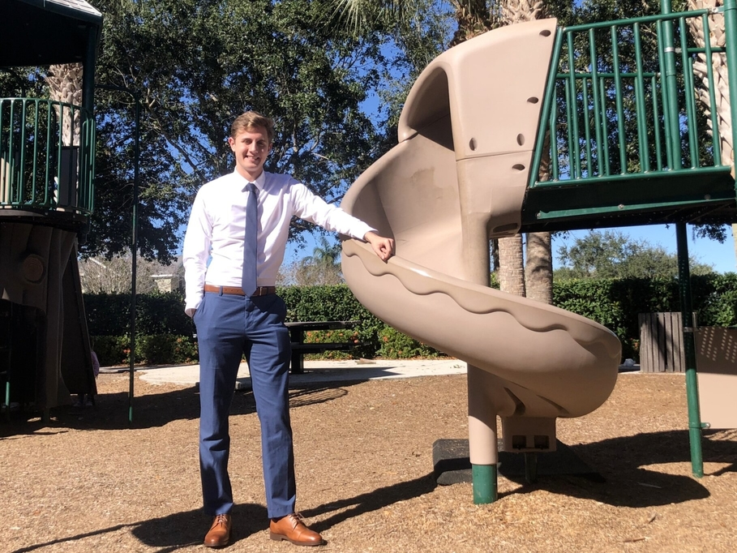

Proud to call this city my home.
Thomas' Story
Growing up I went to the public schools here in Port Saint Lucie. Starting at Morningside Elementary all the way to Treasure Coast High School. The people in my neighborhood would come out and we would all play sports in the city streets. My whole life has been nurtured by this city. I’ve had multiple jobs in a short period of time.
I’ve lived the life of multiple jobs in a short period of time. I started out working as a pizza delivery driver and also tried a retail sales job. I learned a lot about our community while working as a research assistant at the Economic Development Council of St. Lucie County, a job reserved for college graduates with an MBA. As I was attending high school and working at the Economic Development Council, I started my own business called Boosted Gallery. This business was a photography business including myself and photographers. I was the CEO and manager. After graduating high school I went on to currently volunteer at the public defender’s office to further involve myself in this city.
The reason why I am running for the District 4 City Council seat is to turn Port St. Lucie into a 21st Century city where our citizens are able to live surrounded by art, culture, and entertainment, whilst not having to pay a ridiculous tax bill for themselves or their businesses.
Another reason is so our community can truly thrive under new, bold ideas. Under the People Plan, there will be a lower tax bill. Under the Prosperity Plan, there will be more companies and more jobs. Finally, under the Places Plan, the city will go from being called a, “bedroom community” to being called, “the place to be.”
This election will decide which direction the city will go. That is what makes your vote vital.
I’ve lived the life of multiple jobs in a short period of time. I started out working as a pizza delivery driver and also tried a retail sales job. I learned a lot about our community while working as a research assistant at the Economic Development Council of St. Lucie County, a job reserved for college graduates with an MBA. As I was attending high school and working at the Economic Development Council, I started my own business called Boosted Gallery. This business was a photography business including myself and photographers. I was the CEO and manager. After graduating high school I went on to currently volunteer at the public defender’s office to further involve myself in this city.
I’ve lived the life of multiple jobs in a short period of time. I started out working as a pizza delivery driver and also tried a retail sales job. I learned a lot about our community while working as a research assistant at the Economic Development Council of St. Lucie County, a job reserved for college graduates with an MBA. As I was attending high school and working at the Economic Development Council, I started my own business called Boosted Gallery. This business was a photography business including myself and photographers. I was the CEO and manager. After graduating high school I went on to currently volunteer at the public defender’s office to further involve myself in this city.
I’ve lived the life of multiple jobs in a short period of time. I started out working as a pizza delivery driver and also tried a retail sales job. I learned a lot about our community while working as a research assistant at the Economic Development Council of St. Lucie County, a job reserved for college graduates with an MBA. As I was attending high school and working at the Economic Development Council, I started my own business called Boosted Gallery. This business was a photography business including myself and photographers. I was the CEO and manager. After graduating high school I went on to currently volunteer at the public defender’s office to further involve myself in this city.
I’ve lived the life of multiple jobs in a short period of time. I started out working as a pizza delivery driver and also tried a retail sales job. I learned a lot about our community while working as a research assistant at the Economic Development Council of St. Lucie County, a job reserved for college graduates with an MBA. As I was attending high school and working at the Economic Development Council, I started my own business called Boosted Gallery. This business was a photography business including myself and photographers. I was the CEO and manager. After graduating high school I went on to currently volunteer at the public defender’s office to further involve myself in this city.
I’ve lived the life of multiple jobs in a short period of time. I started out working as a pizza delivery driver and also tried a retail sales job. I learned a lot about our community while working as a research assistant at the Economic Development Council of St. Lucie County, a job reserved for college graduates with an MBA. As I was attending high school and working at the Economic Development Council, I started my own business called Boosted Gallery. This business was a photography business including myself and photographers. I was the CEO and manager. After graduating high school I went on to currently volunteer at the public defender’s office to further involve myself in this city.